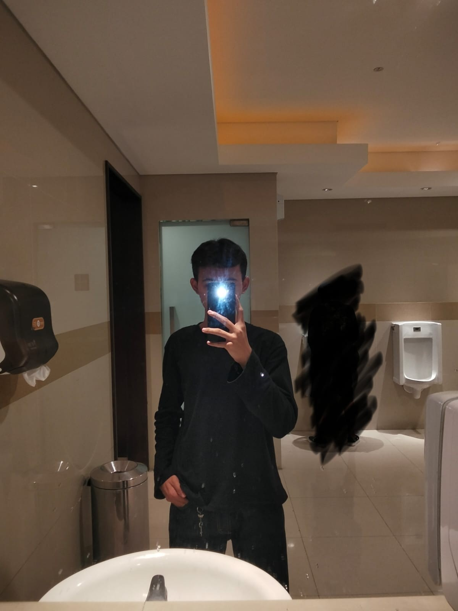

Tentang Saya
Senin, 19 Okt 2026
Nama saya Achmad Fakhri Fajar Irawan, umur saya sekarang menuju yang ke-17 tahun. Saya lahir pada tanggal 10 Desember 2009, saya tinggal di Komplek Taman Permata Cipondoh, saya adalah anak ke-2 dari 4 bersaudara. Sebelumnya pada saat kecil saya sekolah di TK Al-Muhajirin, dan melanjutkan di SD Cipondoh 01, setelah itu jenjang smp nya di SMP Negeri 18 Tangerang, dan sekarang saya melanjutkan di SMK Negeri 1 Tangerang baru kelas 11, saya pun mengambil jurusan DKV (Desain Komunikasi Visual). Hobi saya adalah bermain bola, bisa futsal, mini soccer, bola voli dan bola basket